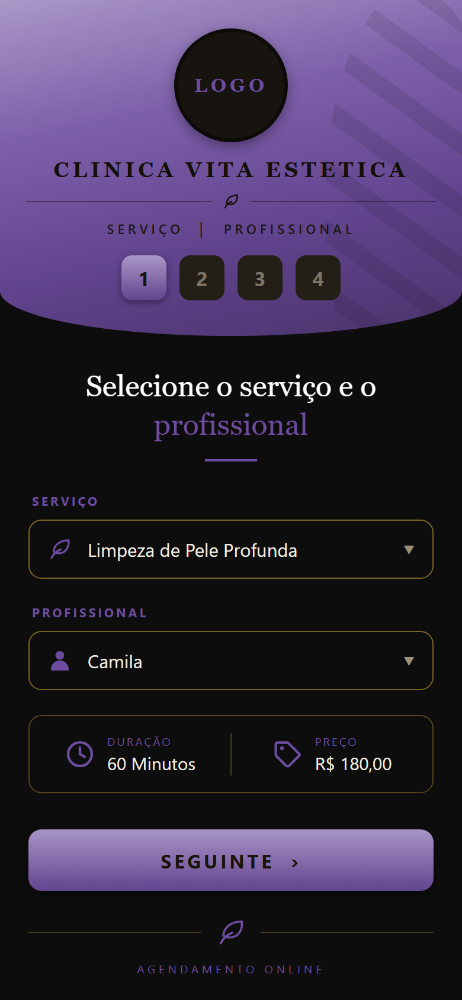
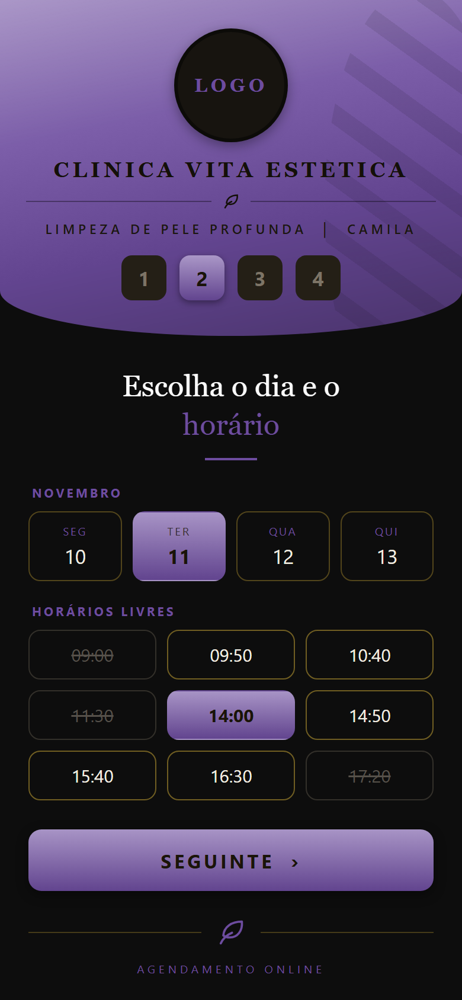
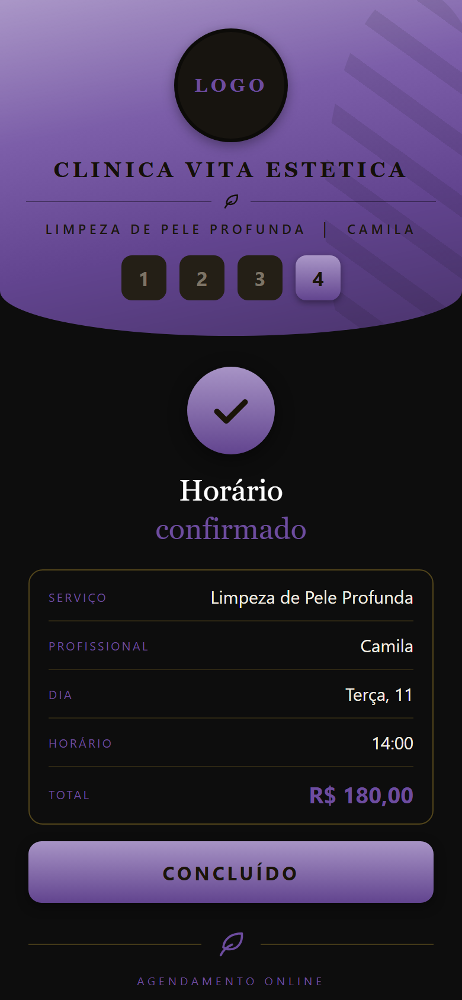
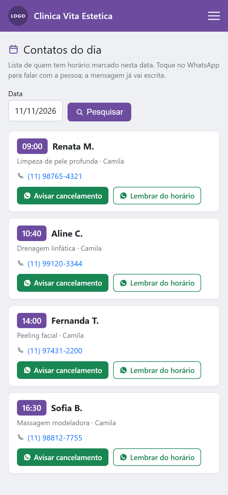

Agenda online para clínica de estética e esteticista, com o nome, o logo e as cores da sua clínica. A cliente vem do Instagram, escolhe o protocolo, vê os horários livres e confirma — sem baixar aplicativo e sem passar pela sua caixa de mensagens.
A demo aberta é de uma barbearia — foi o primeiro segmento que atendemos e ainda não montamos uma de estética. O app é o mesmo: mudam os procedimentos, as profissionais, o logo e as cores. Para ver com a sua marca antes de decidir, chame no WhatsApp que a gente monta.
O caminho da cliente de estética hoje é quase sempre o mesmo: ela vê o resultado num post, toca no link da bio e cai no WhatsApp. Aí começa a parte cara: “oi, quanto custa?”, “tem horário sábado?”, “e na terça de manhã?”. São várias mensagens por cliente, e boa parte delas acontece enquanto você está com outra pessoa na maca.
Um bom conteúdo no Instagram traz gente. Mas se o link da bio abre uma conversa em vez de uma agenda, quem vira cliente é quem teve paciência de esperar sua resposta — e nem sempre é a maioria.
Trocar o link da bio pelo link de agendamento é a única alteração necessária para começar. Ela chega, vê o protocolo com o tempo e o valor, escolhe entre os horários que existem de verdade e confirma. Você recebe o horário na agenda, já organizado por profissional.
Clínica raramente tem uma pessoa só. Cada profissional tem o próprio expediente, a própria folga e os próprios procedimentos, e a cliente escolhe com quem quer ser atendida. A parte que costuma pesar no orçamento é justamente essa: quase todo sistema do mercado cobra por profissional cadastrada.
| Profissionais na clínica | Sistemas que cobram por cabeça | Horário Cheio |
|---|---|---|
| 1 | uma mensalidade | R$ 49,90 |
| 3 | até três vezes mais | R$ 49,90 |
| 5 | até cinco vezes mais | R$ 49,90 |
Preferimos não colocar aqui o preço de concorrente sem fonte: os números com nome, valor e data de consulta estão na página de comparação. A regra do nosso lado é simples — contratar mais uma esteticista não mexe na mensalidade.



Telas de uma clínica de exemplo. Na sua, a marca é a sua — a cliente não vê nome de fornecedor em nenhum momento.
Você abre o painel pelo celular, escolhe a data e vê a agenda do dia em ordem de horário: cliente, procedimento, profissional responsável e telefone, com um botão de WhatsApp por linha — a mensagem já vai escrita e você pode alterar antes de enviar.
Numa clínica com mais de uma profissional isso substitui o grupo do WhatsApp e a agenda de papel na recepção: quem chega de manhã vê o dia inteiro numa tela, sem precisar perguntar a ninguém.
É um botão por cliente, com você apertando enviar. Ferramenta que dispara para todo mundo de uma vez é o que faz o WhatsApp bloquear o número da clínica — o número que está no seu Instagram e no seu cartão.
No mesmo painel você abre e fecha horários, lança férias de uma profissional sem mexer na agenda das outras, bloqueia o dia da clínica inteira num feriado e cadastra procedimentos e valores.

Só nome e celular. O app não tem ficha de anamnese, não guarda foto de antes e depois, não registra procedimento realizado nem qualquer informação de saúde.
Isso é uma limitação e uma escolha ao mesmo tempo. Informação de saúde é dado pessoal sensível na LGPD, com exigências bem maiores de guarda e de consentimento do que um nome e um telefone. Um sistema de agendamento que não coleta esse tipo de dado tira essa responsabilidade do lugar errado — a sua ficha de avaliação continua onde já está hoje.
O cadastro pode ser exportado em planilha quando você pedir, e essa condição está escrita em contrato. Se um dia você sair, sai com a sua base.
App completo com a marca da clínica no endereço horariocheio.com.br/suaclinica, profissionais e agendamentos ilimitados, instalação e configuração grátis.
Tudo do Essencial, mais domínio próprio (suaclinica.com.br) registrado e pago por nós, e montagem de logo e cores.
14 dias grátis, sem cartão. Sem fidelidade, sem multa de cancelamento. Em contas do seu caixa: a mensalidade custa menos que uma sessão de limpeza de pele.
Esta lista existe porque clínica de estética costuma precisar de coisas que a gente não entrega hoje. Melhor saber antes:
Serve. O preço é do negócio e não por profissional, então quem atende sozinha paga o mesmo R$ 49,90 e cadastra só o próprio nome. O endereço do atendimento só aparece se você escrever.
Sim. Cada uma tem expediente, intervalo de almoço, folga semanal e férias próprios, e atende só os procedimentos que estiverem ligados a ela. A cliente escolhe a profissional na primeira tela. Bloquear a agenda de uma não mexe na das outras; para feriado existe o bloqueio da clínica inteira.
É o caso normal aqui. Cada procedimento tem a própria duração cadastrada — um protocolo corporal de 90 minutos e um design de sobrancelha de 30 não concorrem pelo mesmo espaço. O sistema só oferece à cliente os horários em que aquele procedimento cabe inteiro.
Não hoje. A cliente marca sessão por sessão, e o controle de quantas já foram continua no seu registro atual. Se pacote é o centro da sua operação, este ponto pesa mais do que o preço — vale conversar antes de assinar.
O app não cobra sinal, então não impede a falta. O que ele oferece é a tela de contatos do dia: você abre pela manhã, vê quem está marcado e envia a confirmação pelo WhatsApp com a mensagem pronta. Confirmação na véspera reduz falta; o disparo é seu, não do sistema.
Não. Muda só para onde o link aponta: em vez de abrir a conversa, ele abre a agenda. O WhatsApp continua sendo o canal de quem tem dúvida de verdade — que é uma parte bem menor das mensagens que você recebe hoje.
Algumas horas depois que você enviar a lista de procedimentos com valor e duração, os horários de cada profissional e o logo. Você testa o link pronto antes de divulgar para qualquer cliente.